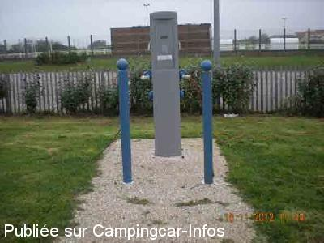
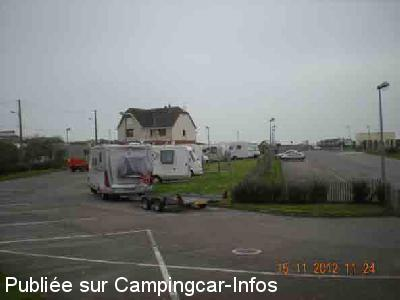
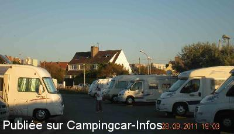

ASN = Aire de services avec stationnement nuit possible de :
LE PORTEL
(N° 709)
Accès/adresse :
Rue des Champs
Parking du stade de football
62480 LE PORTEL
Parking du stade de football
62480 LE PORTEL
Latitude : (Nord) 50.71145° Décimaux ou 50° 42′ 41′′
Longitude : (Est) 1.57549° Décimaux ou 1° 34′ 31′′
Tarif : 2014
Stationnement : 5 €
Eau ou 4 heures d'électricité : 2 €
Paiement par carte bancaire
Type de borne : URBAFLUX
Services :


Tous commerces
Autres informations :
Ouvert toute l'année
40 emplacements
8 prises électriques
Tel : +33(0)321 877 373
leportel@nordnet.fr
http://www.ville-leportel.fr

Le 20/11/2012 par michele.be

Le 20/11/2012 par michele.be

Le 02/10/2011 par michele.be
de
Fred Martin
le 17/02/2015 :
Nous n'y sommes passés que pour les services mais, dans ce cas allez ailleurs:
Évacuation des eaux usées impossible pour les CC de passage (située dans l'enceinte payante).
Eau propre uniquement avec un code et donc pour ceux qui passent la nuit.
Seule la vidange des K7 est possible... sans eau.
Bref, l'aire est très mal pensée pour ceux qui n'y logent pas.
Nous n'y sommes passés que pour les services mais, dans ce cas allez ailleurs:
Évacuation des eaux usées impossible pour les CC de passage (située dans l'enceinte payante).
Eau propre uniquement avec un code et donc pour ceux qui passent la nuit.
Seule la vidange des K7 est possible... sans eau.
Bref, l'aire est très mal pensée pour ceux qui n'y logent pas.
de
Marose
le 15/05/2014 :
l'endroit ou se trouve l'aire n'est pas terrible mais elle est propre et bien entretenue
nous étions sur place en même temps que la kermesse du village !
Pas mal de bruit que nous n'aurions pas eu sans cet événement inattendu.
l'endroit ou se trouve l'aire n'est pas terrible mais elle est propre et bien entretenue
nous étions sur place en même temps que la kermesse du village !
Pas mal de bruit que nous n'aurions pas eu sans cet événement inattendu.
de
michele.be
le 20/11/2012 :
De passage le 14/11/2012
Nous trouvons cette aire très agréable, accueillante, propre, bien éclairée et que pour 3€.
La borne d'entrée est très simple, il suffit de suivre les instructions.
Un grand merci aux réalisateurs et la ville.
De passage le 14/11/2012
Nous trouvons cette aire très agréable, accueillante, propre, bien éclairée et que pour 3€.
La borne d'entrée est très simple, il suffit de suivre les instructions.
Un grand merci aux réalisateurs et la ville.
de
jocelyne
le 06/10/2012 :
On y est allé dimanche dernier .difficile à entrer car beaucoup de choses à taper sur le clavier.C'est un neerlandais qui m'a expliquée en anglais c'est pour dire !!le temps etait gris les alentours gris en bas la plage et a droite dans la mer une usine bouh je n'y reviendrais plus trop demoralisant;de plus les emplacement sont un peu mal foutus
On y est allé dimanche dernier .difficile à entrer car beaucoup de choses à taper sur le clavier.C'est un neerlandais qui m'a expliquée en anglais c'est pour dire !!le temps etait gris les alentours gris en bas la plage et a droite dans la mer une usine bouh je n'y reviendrais plus trop demoralisant;de plus les emplacement sont un peu mal foutus
de
Anne Xavier
le 30/07/2012 :
Le jour ou nous sommes allés là-bas,il faisait gris.Avec les bâtiments de la même couleur autour,( de l'autre côté de la photo!)c'était pas le top.La barrière ne fonctionnait pas très bien,il a fallut s'y reprendre deux ou trois fois pour pouvoir rentrer!Sinon pour l'électricité,ça a été.
Le jour ou nous sommes allés là-bas,il faisait gris.Avec les bâtiments de la même couleur autour,( de l'autre côté de la photo!)c'était pas le top.La barrière ne fonctionnait pas très bien,il a fallut s'y reprendre deux ou trois fois pour pouvoir rentrer!Sinon pour l'électricité,ça a été.
de
Albert
le 01/07/2012 :
De passage fin juin sur cette aire de stationnement et de service, calme, commerces à proximité, possibilité de nombreuses promenades, un petit bémol l'entrée est un peu longue, beaucoup de détails à taper avant que la barrière ne s'ouvre.
De passage fin juin sur cette aire de stationnement et de service, calme, commerces à proximité, possibilité de nombreuses promenades, un petit bémol l'entrée est un peu longue, beaucoup de détails à taper avant que la barrière ne s'ouvre.
de
petit
le 07/03/2011 :
de passage ce week end tous les services etaient gratuit ainsi que le stationnement l'aire est bien situé et calme malgres la proximité du terrain de foot et du skate park
de passage ce week end tous les services etaient gratuit ainsi que le stationnement l'aire est bien situé et calme malgres la proximité du terrain de foot et du skate park
de
DECRAEMER Alain
le 04/07/2009 :
Aire en deux parties : l'une en bord de route avec électricité mais qui sera réservée aux voitures après aménagement du grand parking en face, travaux en cours. Bien située 300m de la mer des grands magasins 500 du centre ville, grand parc aménagé pour les promenades ainsi qu'un GR pour se rendre à BOULOGNE(4km). Merci à la municipalité.
Aire en deux parties : l'une en bord de route avec électricité mais qui sera réservée aux voitures après aménagement du grand parking en face, travaux en cours. Bien située 300m de la mer des grands magasins 500 du centre ville, grand parc aménagé pour les promenades ainsi qu'un GR pour se rendre à BOULOGNE(4km). Merci à la municipalité.